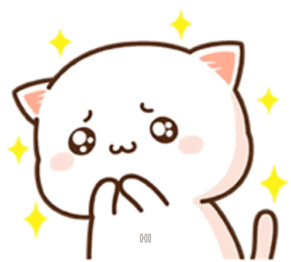
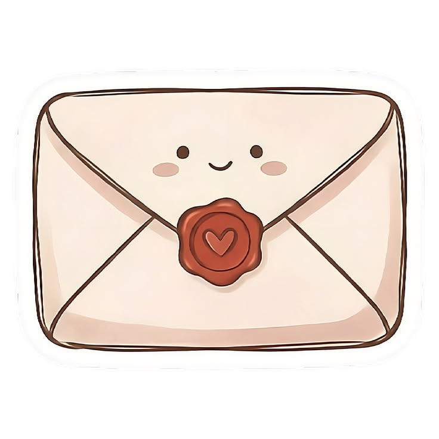
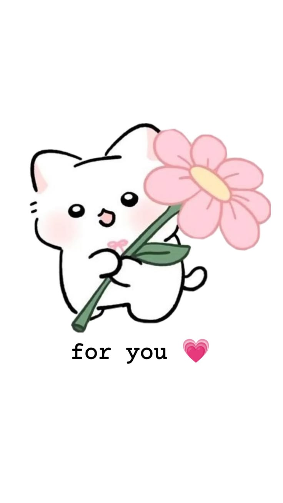

Read your message?

Click the envelope to open 💌

I just wanted to write this little note to let you know how special you are to me. Kahit na I made a reallyy big mistake kagabi. I still want to make you feel loved through small efforts like this.
First, I want to show my appreciation to you babbyyy. Kahit gaano man yung mga nangyayari na minsan wala akong idea, you still remain kind. I hopee that my babbyy also remains kind to himself.
This is not your usual apology letter, I have done that, pero of course I am still sincerely sorryy about what I did last night baby. Walang excuse for what I did kasi I could have replied agad-agad, or kahitt ano man lang. Naiintindihan ko yung naiinis ka na then ganon pa gagawin ko babyy.
But like I said this isn't your usual apology letter. Because here you should feel how much I have been loving your soul. You always make my days feel lighter, which I hope I always do so with you babbyy.
I always lovveee the moments we share laughter, as much as the moments we are just here for each other quietly. You are and you alwayss make lifeee meaningful and beautiful babyy. Me, and my prefrontal cortex only belongsss to youuu, and every single part of my heart.
Nothing else matters half as much as you doo. Kasi nothing makes me smile for no reason at all like you do, yunggg pogiiii mo na faceeeee, yung voice mo that calms me down, and the person I would happily look at for the rest of my life and still never get enough of.
I appreciate how no matter what you still remaind kind, gentle, and it might not be perfect in a way but your flaws are also part of what I love about you. I will alwayss cherishh every single moment we get to share, every exchange if I love you, every video call or calls we do, no matter how far we are.
Just knowingg that I am yourss is the greatest thing I could even think of. You are my favorite,my homeee, and my wholeee heartt. I love you more than all the stars in the universe, more than the words I tell you. and I will always love you softly, just as completely, for every single moment that comes.
With love,
yourr babyyyy